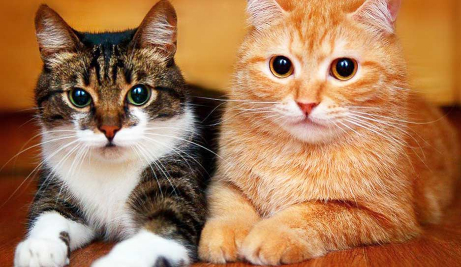

Котята самые милые животные!
Все люди делятся на две группы - те, кто любят собак и те, кто обожают котиков. Я собрал для вас 15 фактов, которые заставят по-новому посмотреть на пушистиков, даже если у вас на них аллергия
1 факт
1. Ученые зафиксировали, что у хозяев кошек вероятность инфаркта или инсульта уменьшается на 30%.
2 факт
2. Оказывается, у людей и котов за эмоции отвечают одни и те же участки мозга.
3 факт
3. Коты спят в среднем 70% времени в течение суток - больше двух третей своей жизни.
4 факт
У каждого кота свой уникальный отпечаток носика — это как отпечатки пальцев для людей.
5 факт
У кошек нет потовых желез по всему телу, как у людей. Они потеют только через лапы.
6 факт
Котики настолько чувствительны к вибрациям, что могут почувствовать землетрясение на 15 минут раньше людей.
7 факт
Научно доказано, что коты могут спасать от плохого настроения. Они "лечат" людей своим мурчанием, теплом, а также особым магнитным полем. Это даже имеет отдельное название — фелинотерапия.
8 факт
Кошки, как правило, правши, а коты — левши.
9 факт
Самый большой кот в мире - мейн-кун по имени Омар, который вырос до 120 см и весит 14 кг. Он живет в Австралии и питается мясом кенгуру. А старой была признана кошечка Крим Пафф из Техаса, которая прожила целых 38 лет и три дня.
10 факт
В Европе и Северной Америке встретить черного кота — это плохой знак. А вот в Великобритании и Австралии это, наоборот, предсказывает большую удачу.
11 факт
Самая популярная порода котов в мире — персидская. После них идут мейн-куны ,сиамские и тайские.
12 факт
Хотя считается, что коты не любят воду, представители одной породы — турецкий ван — просто обожают плавать. Их мех даже имеет водонепроницаемые свойства.
13 факт
Когда в Диснейленде наступает ночь, там выпускают 200 кошек для отлова грызунов.
14 факт
Коты могут пить морскую воду — их почки имеют особую способность отфильтровывать соль.
15 факт
Есть сведения, что коты помогли обнаружить "жучки" в посольстве Нидерландов. Сотрудники заметили, что две сиамские кошки часто приходили к одной из стен и начинали царапать ее. Впоследствии там были обнаружены микрофоны русских шпионов.